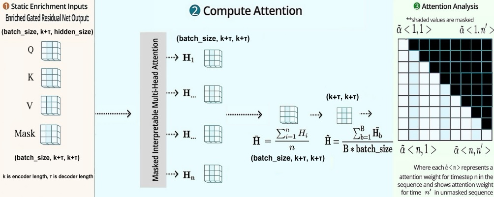

Temporal Fusion Transformer#
To understand the rationale behind choosing TFT [14] for this study, we give a theoretical background of TFT and its self-attention weights, which we later extract to interpret the spatiotemporal patterns of COVID-19 infection.

TFT architecture [14]. TFT effectively builds feature representation from static covariates, observed inputs, and known future events. The transformer adopts four key layers from the bottom: (L1) Embedding & Input Transformation, (L2) Variable Selection, (L3) LSTM, (L4) Self-Attention.
Model Architecture#
The figure shows a brief overview of the TFT model architecture for three types of input covariates and the target output. We highlighted four key components of the model as follows:
Embedding and input transformation#
Embedding and input transformation are performed on static metadata, time-varying past inputs, and timevarying known future inputs. The model inputs are passed through a Variable Selection Network (VSN) to select the most salient features and filter out noise.
LSTM layer#
LSTM layer enhances learning significant points in the surrounding (e.g. anomalies, cyclical patterns) by leveraging local context. Past inputs are fed into the encoder, whereas known future inputs are fed into the decoder. The outputs go through a static enrichment layer. For example, the static covariate features (e.g., Age distribution, Health Disparities) provide the context vectors (cs, cc, ch, ce) to conditions for temporal dynamics: (a) cs being fed to the temporal VSN blocks, (b) (cc, ch) setting up the initial cell state and hidden state vectors of LSTM for local processing of temporal features, and (c) ce enriching of temporal features at the later static enrichment phase.
Static enrichment#
Static enrichment layer uses Gated Residual Network (GRN) to enhance temporal features with static metadata, as static features often influence temporal dynamics. Gated Residual Network (GRN) works as its building block.
Interpretable multi-head self-attention#
Interpretable multi-head self-attention takes staticenriched temporal features as inputs and learns longrange temporal dependencies. The self-attention can access all previous states and weigh them according to a learned measure of relevance.
Attention Wieght in TFT#
TFT uses the self-attention mechanism to learn long-term time-dependent relationships. Given, values, keys, and queries as V, K, and Q, attention can be defined as below where A() is a normalization function:
Multi-head attention [20] improves the learning capacity of this standard attention by employing different heads \((H_h)\) for different representations and then combining them:
TFT [14] improved this multi-head attention by sharing values in each head and additively integrating as follows:
After the static-enrichment layer, the enriched temporal features are grouped into a matrix \(\Theta(t) = [\theta(t,-k), \dots, \theta(t, \tau)]^T \), where \(k\) is the encoder length and \(\tau\) is the forecast horizon. At each forecasting time, \(t\), the selfattention layer \(\tilde{A}\) calculates a matrix of attention weights. The multi-head attention at each forecast horizon \(\tau\) is then defined as an attention-weighted sum of lower-level features at each position \(n \in (-k, \tau_{max})\), given by the following equation:
where \(\alpha(t, n, \tau)\) is the \((\tau, n)\)-th element of \(\tilde{A}\) and \(\tilde{\theta}(t, n)\) is a row of \(\tilde{\Theta}(t) = \Theta(t)\textbf{W}_v\). For each forecast horizon \(\tau\) , the importance of a previous time point \(n < \tau\) (e.g. prior day) can be calculated by analyzing the \(\alpha(t, n, \tau)\) values across time steps (e.g. days) and entities (e.g. counties). In our study, we utilized the PyTorch implementation of TFT [21]. The interpretable multi-head attention weight is a \((N_s, \tau, \textbf{H}, k + \tau)\) matrix, where \(N_s\) is the total number of sequences in the dataset, \(\tau\) is the forecasting horizon (15 days), \(\textbf{H}\) is the number of attention heads, and \(k\) is the number of prior days (13 days). \(N_s\) can be computed by \(N_d \times (k+\tau-1)\), where \(N_d\) is the number of time steps per county. The upper right half of the attention matrix is masked since \(\alpha(t, i, j) = 0, \forall i > j\). The mean is then taken over by the attention heads to obtain the attention weight for each day at each county level. An illustration of this process is shown below.
